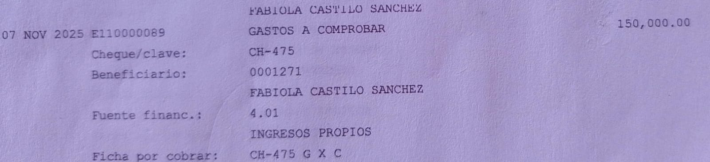
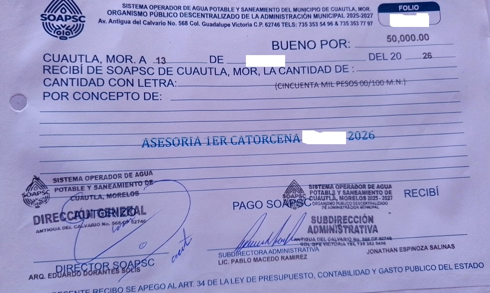

El pasado que se sienta en la tesorería
En Cuautla, tres auditorías revisan las finanzas municipales. Documentación del organismo operador de agua vincula a la actual tesorera con pagos y con transferencias millonarias 'por error' al ayuntamiento, y muestra a un extesorero, hoy detenido, cobrando 'asesoría' del mismo organismo. La palabra clave es conflicto de interés.

Cuautla acumula auditorías como pocas ciudades de Morelos. La Auditoría Superior de la Federación ordenó una revisión forense a su gasto federalizado de 2025, la número 1417. La Entidad Superior de Auditoría y Fiscalización del estado revisa las finanzas municipales. Y el propio alcalde sustituto, Salvador Molina, prometió al asumir que auditaría al ayuntamiento y al organismo operador de agua, y que denunciaría a las administraciones anteriores.
Hasta ahí, la historia es la de un gobierno que promete limpiar. El problema empieza cuando se mira quién quedó a cargo de la escoba.
Conviene recordar de qué está hecho el dinero del que hablamos. Los ingresos propios de un organismo operador de agua son lo que cada familia paga por un servicio básico, recibo por recibo. Por eso el estándar para gastarlo no es de cortesía, es de ley: la Ley de Presupuesto, Contabilidad y Gasto Público del Estado de Morelos ordena, en sus artículos 26 y 27, que todo gasto público se justifique y se compruebe con documentación original.
De acuerdo con su nombramiento, Fabiola Castillo Sánchez es hoy tesorera del ayuntamiento de Cuautla. Su nombre aparece también, una y otra vez, en las operaciones del organismo operador de agua, el SOAPSC, según documentación a la que este medio tuvo acceso, de fuentes que solicitaron reserva de identidad.
Que ambos coincidan en una misma persona no prueba delito alguno. Pero abre una pregunta que la ciudadanía tiene todo el derecho de formular: ¿por qué el nombre de quien hoy maneja las finanzas del municipio figura en los movimientos, algunos millonarios, del organismo de agua, y con qué carácter aparece ahí?
La Ley General de Responsabilidades Administrativas define el conflicto de interés como "la posible afectación del desempeño imparcial y objetivo de las funciones de los servidores públicos en razón de intereses personales, familiares o de negocios". Conviene subrayar una palabra: posible. La ley no exige que el daño se consuma, le basta con que el riesgo exista.
Veamos qué dice la documentación. A nombre de Fabiola Castillo Sánchez, como beneficiaria, el organismo registró pagos por concepto de aguinaldo y de gastos a comprobar, por alrededor de 190 mil pesos. El aguinaldo no es un detalle menor: la ley reserva esa prestación a los trabajadores, de modo que la revisión tendrá que esclarecer si existía una relación laboral que la justificara. Y un "gasto a comprobar" es un anticipo legítimo solo mientras se comprueba; cuando la comprobación no llega, se vuelve, en el lenguaje de la auditoría, un presunto daño patrimonial.

La presunción de inocencia protege a las personas, no a los cargos. Y hay cargos que no deberían ocuparse mientras una sombra no se despeja.
Pero hay operaciones de otra escala. Transferencias por cerca de cuatro millones de pesos que salieron del organismo de agua hacia el propio ayuntamiento, algunas rotuladas con un concepto tan singular como "pago por error", en cuyos asientos figura, otra vez, su nombre. Un error, en contabilidad, se corrige y se devuelve. La pregunta que la auditoría deberá responder es si esas devoluciones ocurrieron, o si el dinero del agua se quedó, por la vía del "error", en las cuentas del municipio.
El caso tampoco es único, y ahí está lo que más debería inquietar. Jonathan Espinoza Salinas fue tesorero del ayuntamiento de Cuautla hasta su detención, en mayo, dentro del Operativo Enjambre. Según la misma documentación, mientras ocupaba esa tesorería recibía además del organismo de agua pagos por "asesoría" del orden de 50 mil pesos por catorcena. La ley no prohíbe que un funcionario preste servicios, pero sí veda la incompatibilidad y el conflicto de interés, y obliga a comprobar cada peso. La pregunta se impone sola: ¿qué asesoraba el tesorero del municipio al organismo de agua de ese mismo municipio, con qué contrato y con qué entregables?

Se dibuja así un patrón en dos tiempos. Un tesorero que cobraba del organismo mientras dirigía la caja municipal, hoy detenido. Y una tesorera cuyo nombre recorre las operaciones de ese mismo organismo, hoy al frente de esa caja. En medio, el mismo protagonista silencioso: los recursos del agua, los que pagan las familias con cada recibo, apareciendo del lado de quienes controlan las finanzas del municipio.
La ley tiene nombre para cada eslabón. Autorizar la salida de recursos públicos sin fundamento jurídico es, en el artículo 54 de la Ley General de Responsabilidades Administrativas, desvío de recursos públicos, una falta grave que sanciona el Tribunal de Justicia Administrativa y que, con elementos, puede escalar a la vía penal. Y esa ley no alcanza solo a los servidores públicos: también a los particulares que participen.
Nada de esto prejuzga a nadie. Que un nombre aparezca en un expediente no lo hace responsable de nada, y mientras las revisiones no concluyan rige, para todos, la presunción de inocencia. Este espacio queda abierto a la versión de las personas mencionadas y del ayuntamiento. Pero la presunción de inocencia protege a las personas, no a los cargos. Y hay cargos que, por prudencia elemental, no deberían ocuparse mientras una sombra no se despeja.
Un gobierno que llega prometiendo auditar el pasado tiene una prueba de coherencia al alcance de la mano: que nadie señalado en las operaciones por revisar tenga, hoy, la llave de la caja. No es una acusación. Es la distancia que separa auditar el pasado de sentarlo en la tesorería.
SRVO
Fuentes y referencias citadas
- Auditoría Superior de la Federación, Modificaciones al PAAF de la Cuenta Pública 2025, DOF 5 de junio de 2026 (auditoría 1417, Municipio de Cuautla).
- Salvador Molina asume la alcaldía de Cuautla y anuncia revisión de finanzas, El Universal.
- Prepara el alcalde de Cuautla denuncias contra gobiernos pasados, Quadratín Morelos.
- ¿Quién es Jonathan Espinoza Salinas? Tesorero de Cuautla, SDP Noticias.
- Ley General de Responsabilidades Administrativas, artículos 3 (fracción VI) y 54.
- Ley de Presupuesto, Contabilidad y Gasto Público del Estado de Morelos, artículos 26 y 27.